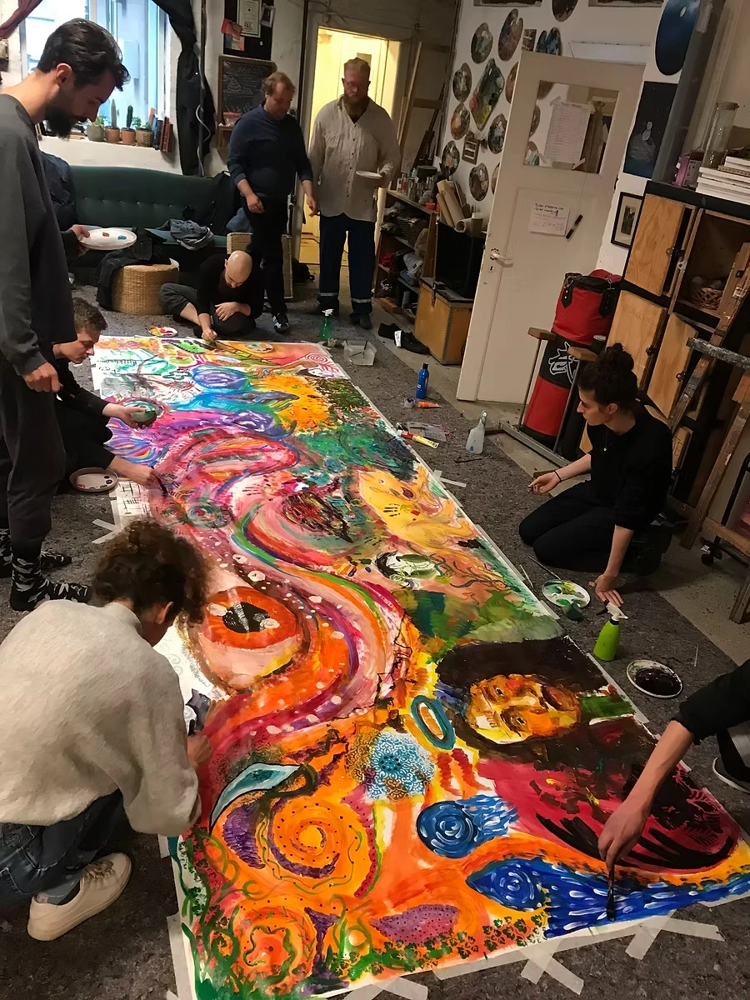

Valeria
Rizzo
about the artistMy Bio
Valeria Rizzo is a talented artist who graduated from the prestigious art academy of Bologna in 2010.
Specializing in oil techniques she create stunning unique masterpieces on canvas, paper, wood and walls.
Her artistic journey began with a focus on portraiture and evolved into captivating surreal representations that invite viewers into her imaginative world.
Valeria has also made a name for herself as an illustrator, showcasing her skills in digital drawing. She has illustrated several children's books, bringing stories to life with her vibrant and engaging artwork.
in 2020 Valeria opened an art studio called "Backyart Studios" in which she work with other eleven artists and started her own art company "atelier". "Backyard studios" is located in Denmark, in the city of Aalborg, and it's the theatre for several courses, workshops, expositions and events.
GALLERIES

WORKSHOPS

be part of an exciting opportunity to enhance your artistic skills! Sign up for one of more upcoming workshops!
I offer private or group lessons focused on oil painting technique, still life drawing and painting, en plain air painting, collaborative drawing.
Whether you're a beginner or looking to improve your skills, my courses are designed to inspire creativity and facilitate collaboration among artists.
Don't miss on the chance to expand your artistic potential!
ENQUIRE ABOUT WORKSHOPSNEWS
Exhibitions and collaborations
Exhibitions
2013 - personal exhibition at Cultural Center "kulturstation", Skørping (DK)
2015 - personal exhibition at Huset's Gallery, Aalborg (DK)
2016 - personal exhibition at ... Hotel (?), Nibe (DK)
2017 - personal exhibition at Huset's Gallery, Aalborg (DK)
- common exhibition at "Byens Rum" Art Collective Studio, Aalborg (DK)
2018 - personal exhibition at "Dome of Vision", Århus (DK)
2021 - common exhibition Backyart Studios, Aalborg (DK)
2022 - exposition at "Holistisk Festival", Aalborg (DK)
- common exhibition Backyart Studios, Aalborg (DK)
2023 - common exhibition at Huset's Gallery, Aalborg (DK)
- common exhibition at "Arrest" Cultural Center and Art Studio, Hobro (DK)
- common exhibition Backyart Studios, Aalborg (DK)
2024 - duo exposition at MO.CA Cultural Center, Brescia (IT)
2025 - exhibition at "Aalborg i Farver" Art Festival, Aalborg (DK)
Collaborations
2016 - collaboration with Artist Jørgen Stendhal, "Artist Exhibit" / life painting
2017 - performance for Art and Technology Student's final exam
2018 - invited as "Artist in Residence" at Art and Technology University, collaboration with Professor Elisabeth Jocohum and researchers Maroš Pekarik, Carlos Gomez and Andreas Hansen / research about interaction between artist and robotic arm
2019 - performance "IF/THEN" for Art and Technology University
2019 - Mindfulness Collaborative Drawing with Professor Elisabeth Jocohum and researchers of Art and Technology Unersity of Aalborg.
2019/2023 - Mindfulness Collaborative Drawing for Communal Cultural Program "Culture Vitaminer", Aalborg (DK)
CONTACTS
“ARTELIER” is located in
Svendsgade 6, backyard
9000 Aalborg, Denmark
Let me know if you would like to come by, then I’ll make sure to be there.